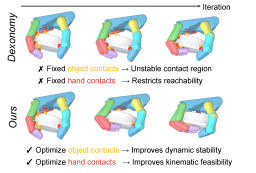
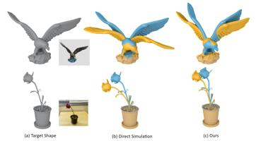
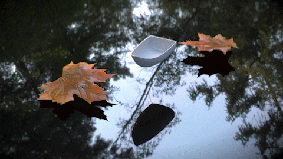

GraspADMM: Improving Dexterous Grasp Synthesis via ADMM Optimization
Liangwang Ruan, Jiayi Chen, He Wang, Baoquan Chen
or just call me Lian
Final Year Ph.D. at Peking University
I am a final-year Ph.D. candidate from the school of Computer Science, Peking University, supervised by Prof. Baoquan Chen, and also a member of the VCL (Visual Computing and Learning) Lab. I obtained my Bachelor's degree in Computer Science from the Turing Class in Peking University. During my past research career, I focused on computer graphics with a specialization in physical simulation and optimization, and was honored to be advised by Dr. Bin Wang, Dr. Tiantian Liu, Prof. Bo Zhu, and Prof. Shinjiro Sueda. Currently, I am perticularly interested in understanding and building robot intelligence, and will join X Square Robot this summer.
I have a blog in Chinese if you are interested.

Liangwang Ruan, Jiayi Chen, He Wang, Baoquan Chen

Liangwang Ruan, Bin Wang, Tiantian Liu, Baoquan Chen, May 2026 in Eurographics

Liangwang Ruan*, Jinyuan Liu*, Bo Zhu, Shinjiro Sueda, Bin Wang, Baoquan Chen (* for joint first authors), August 2021 In SIGGRAPH